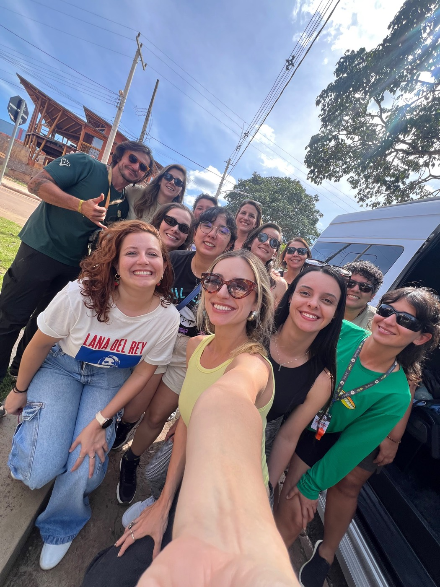

17
Abr
Chegada e welcome drink
A aventura começa com a chegada em Brasília e embarque no translado com destino a São Jorge. No fim da tarde, será servido um welcome drink no hotel para receber e integrar o grupo no clima da Chapada.
Venha curtir o paraíso com a gente: aventura, muitas risadas e a magia da natureza do cerrado goiano.
Em abril de 2026, o grupo SapaTrip viveu cinco dias entre trilhas, cânions e cachoeiras na Chapada dos Veadeiros, em São Jorge – GO. Aventura, contato com a natureza e muitas risadas marcaram cada dia.
Contemplar a magia da natureza... e ainda brindar à vida!

A aventura começa com a chegada em Brasília e embarque no translado com destino a São Jorge. No fim da tarde, será servido um welcome drink no hotel para receber e integrar o grupo no clima da Chapada.
Após o café da manhã, partiremos para um dia dedicado ao Parque Nacional da Chapada dos Veadeiros. Faremos uma caminhada pelas trilhas de acesso aos cânions. Visitaremos o Cânion II, com grandes paredes de pedras de quartzito e várias piscinas, onde faremos o lanche. Uma caminhada de aproximadamente 11 km revela paisagens incríveis, bicas de água, poços para banho e as quedas d'água impressionantes do Rio Preto. O ritmo é moderado, mas recompensador. Ao fim, seguimos para o almoço no restaurante "Morada do Sol".
Após o café da manhã, deslocamento de 120 km até o município vizinho de Cavalcante. Visitaremos o Engenho, a 25 km de Cavalcante, parte do sítio histórico Kalunga, antigo quilombo de escravos refugiados da Bahia que foram descobertos na década de 70. A seguir, conheceremos o principal atrativo natural da comunidade Kalunga, a cachoeira Santa Bárbara, com 30m de altura, um belo rio de águas verde esmeralda com grandes piscinas. Faremos uma caminhada curta, por uma trilha com trechos íngremes. Visitaremos uma bela piscina de água verde esmeralda, onde cai a cachoeira Capivara de um lado e a cachoeira do córrego Tiririca do outro. Almoço preparado especialmente para o grupo no restaurante da dona Auriana. Retorno para a pousada em São Jorge no início da noite. Mais tarde, assistiremos ao incrível pôr do sol no Bar do Mirante.
Um dia repleto de atrações! Após o café da manhã, seguimos até a Fazenda São Bento. Visitaremos a cachoeira Almécegas I, com 45m, onde são oferecidas, para quem tem coragem, as práticas de rapel e tirolesa (opcionais). Em seguida visitaremos a Almécegas II, que tem uma grande piscina onde tomaremos um banho refrescante em meio a paisagens do cerrado. Na saída da fazenda, mais uma parada para banho na cachoeira São Bento. Seguimos para conhecer mais um atrativo do Rio São Miguel, o místico Vale da Lua, uma propriedade particular próxima ao Parque Nacional, com formações rochosas únicas. Caminharemos 600m até o leito do rio São Miguel, exuberante pelas rochas com suas formas exóticas esculpidas pelas águas ao longo de milhares de anos. Seguimos para o almoço no restaurante "Rancho do Sr. Waldomiro". Retorno para a pousada em São Jorge no fim da tarde.
Na despedida, depois do café da manhã, há tempo para curtir as últimas horas no hotel. Às 11h acontece o check-out e o transfer de volta a Brasília, de onde parte o voo de retorno, levando consigo a energia da Chapada dos Veadeiros.
Toque em uma foto para ampliar.
Conheça as próximas viagens da SapaTrip e fale com a nossa agência.